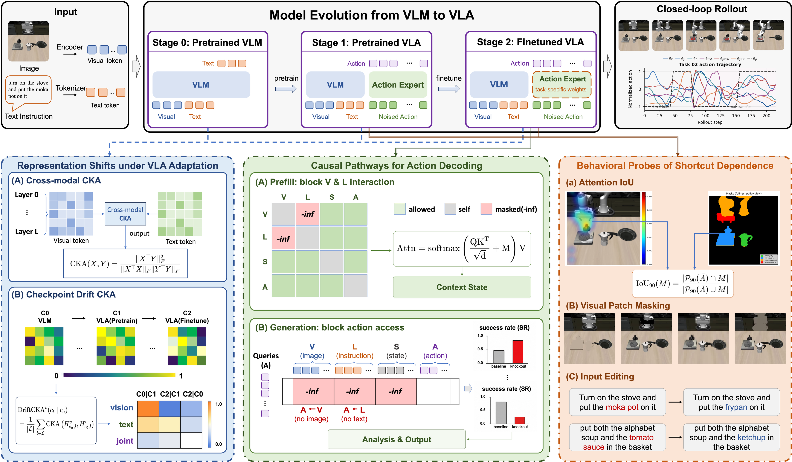

Distinct adaptation dynamics
π0.5 and OpenVLA exhibit different modality-specific representation changes during VLA finetuning.
Diagnosing Vision-Language-Action Models Through
Representation and Behavior Tracing

High success rates reveal what VLA models do, but not how they actually work. VLA-Trace bridges this gap through representation, control, and behavior tracing.
A policy may successfully imitate trajectories while still ignoring subtle language edits, relying on gripper geometry, or exploiting background layout. VLA-Trace links internal representations to causal pathways and then to rollout behavior.
Existing analyses often stop at hidden-state probing or input perturbation. VLA-Trace connects three levels:
VLA-Trace follows three model stages — C0 pretrained VLM, C1 pretrained VLA, and C2 task-finetuned VLA — and applies complementary probes from latent geometry to closed-loop rollout behavior.
Measure image–text alignment and whether visual, textual, and joint subspaces are preserved or reorganized across C0, C1, and C2.
Block selected token pathways during prefill or generation to test whether vision, language, structural prompt tokens, or action paths are necessary.
Use attention IoU, patch masking, and input editing to expose grounding, shortcut dependence, and fine-grained semantic controllability.
| Stage | Probe | Question | Benchmarks | Models |
|---|---|---|---|---|
| S1 | Cross Modal CKA | How strongly do image and text representations align? | LIBEROCOCO | π0.5OpenVLA |
| S1 | Checkpoint Drift CKA | Which representation subspaces are preserved or rewritten? | LIBERO | π0.5OpenVLA |
| S2 | Attention Knockout | Which modality routes are causally required? | LIBEROCALVINRoboTwin2.0 | π0.5OpenVLAOpenVLA-OFT |
| S3 | Attention IoU And Patterns | Do action-conditioned heatmaps overlap with task-relevant regions? | LIBERO | π0.5OpenVLA |
| S3 | Visual Patch Masking & Input Editing | Which visual cues or semantic edits actually change behavior? | LIBEROCALVINRoboTwin2.0SimplerEnv | π0.5OpenVLAOpenVLA-OFTX-VLA |
Choose an experiment by name, inspect the original figure, and open its full details. Each result links back to the related findings.
Our experimental findings suggest that the conclusion is not simply that “vision matters” or “language matters.” Instead, different VLA architectures preserve, route, and use multimodal information in distinct ways.
π0.5 and OpenVLA exhibit different modality-specific representation changes during VLA finetuning.
π0.5 is dominated by a concentrated visual-to-action pathway, while OpenVLA relies more broadly on visual grounding and prompt-region access.
Some dependencies concentrate in narrow bottlenecks; others are distributed across broader layer ranges. The appendix extends this with windowed sweeps.
Action attention overlaps with robot-object interaction regions and shifts across the two phases of long-horizon LIBERO-10 tasks.
Target-object masking causes large drops, showing that attended target objects are not merely visualized but causally required for execution.
Gripper, robot body, and background perturbations expose different architecture-specific reliance patterns.
Edited instructions do not always redirect behavior, suggesting a gap between visual grounding and compositional language-conditioned control.
VLA training should balance adapting to robot control with preserving visual, language, and cross-modal semantic pathways.
Action generation depends on how visual and language information is routed through the model, not merely on its availability.
Semantic-edit objectives, object-swap interventions, and contrastive behavior supervision could make subtle instruction changes causally actionable.
If you find this work useful, please cite the paper.
@misc{shi2026vlatracediagnosingvisionlanguageactionmodels,
title={VLA-Trace: Diagnosing Vision-Language-Action Models through Representation and Behavior Tracing},
author={Haoyuan Shi and Xiancong Ren and Yingji Zhang and Qinfan Zhang and Jiayu Hu and Haozhe Shan and Han Dong and Jinpeng Lu and Yinda Chen and Yi Zhang and Yong Dai and Xiaozhu Ju},
year={2026},
eprint={2605.30117},
archivePrefix={arXiv},
primaryClass={cs.AI},
url={https://arxiv.org/abs/2605.30117},
}